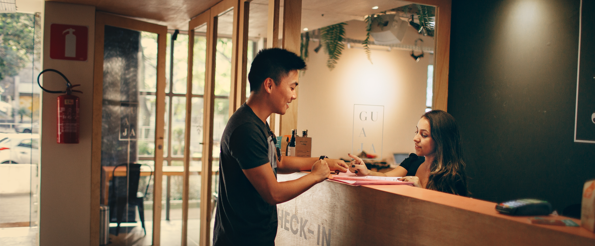
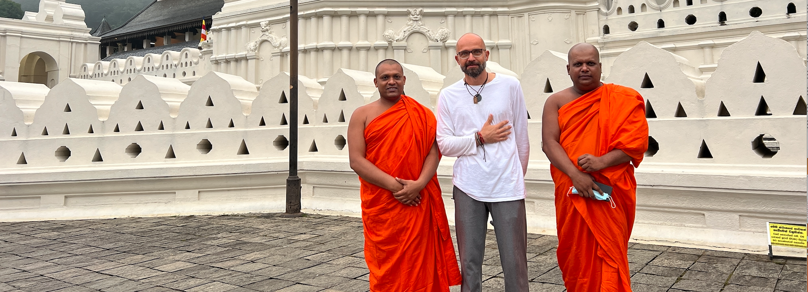
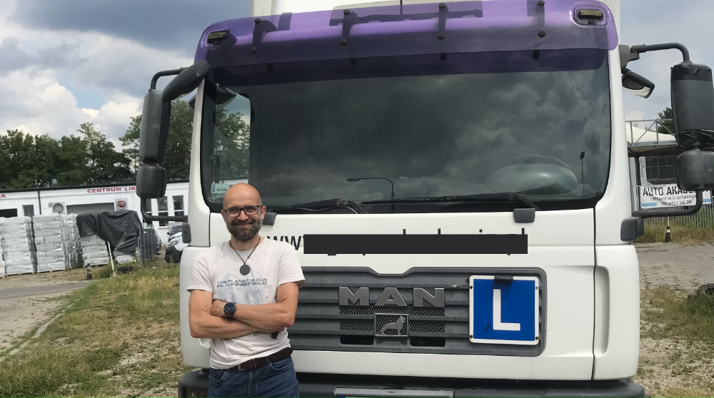
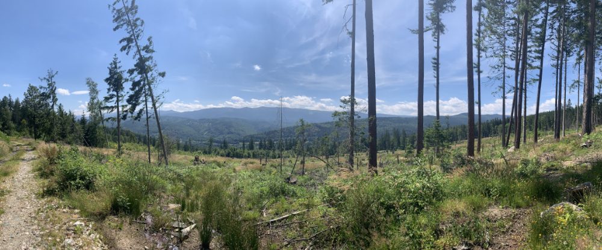

Moje letnia (r)Ewolucja
Hotelarstwo
Przez ponad 20 lat zarządzałem wysokiej klasy hotelami. Mogę powiedzieć, że na hotelarstwie zjadłem zęby. Pracowałem w hotelach wszelkiej maści:
- hotele biznesowe w centrach miast
- hotele eventowe w centrach miast
- hotele spa i medical spa w kurortach
- hotele resortowe w znanych miesjcowościach turystycznych.
Ostatnie kilka lat spędziłem w kilku kurortach górskich. Szklarska Poręba, Świeradów Zdrój, Wisła, Czarna Góra. Miałem pod sobą setki pokoi i dziesiątki pracowników. Mieszkałem w eksluzywnych apartamentach, jadłem w hotelowych restauracjach. Korzystałem w uroków polskiej przyrody - wędrowałem i biegłem po górach, zbierałem grzyby i jagody, zimą jeździłem na nartach. W maju 2022 roku powiedziałem dość. Chcę coś w swoim życiu zmienić. Wyjechałem do Indii.
Duchowe odrodzenie
Indie
W Azji spędziłem pół roku. Na początku swojej wędrówki odwiedziłem Indie.
Indie to kraj skrajności i przeciwności. Ludzie bardzo bogaci mieszkają przez ścianę z biedakami, a za ogrodzeniem w szłasach żyją bezdomni. Bardzo często ci bez dachu nad głową są bardziej szczęśliwi od tych lepiej sytuowanych. Wydaje się, że zasobność portfela nie ma dla Hindusów większego znaczenia. Ubodzy nie zazdroszczą bogatym, bogaci nie żywią pogardy wobec ubogich. Tylko w małych miejscowościach funkcjonuje jeszcze pojęcie klas społecznych, gdzie osoby lepiej wykształcone należą do elit i mieszkają w znacznie wyższym standardzie, a ci niewykształceni klepią biedę i do klasy wyższej dostępu nie mają.
Indie to takze pyszne i niedrogie jedzenie. Turysta zje w przydrożnym barze obiad za 200 - 300 rupii, co oznacza 10zł - 15zł. Naje się przy tym zacnie. Po obiedzie może sobie zafundować banana, kiwi, melona lub moje ulubione mango, za które zapaci niecałą złotówkę. Do picia obowiązkowo ciaj - mocna herbata z mlekiem i przyprawami za niecałe 20 rupii.
Najwaniejszą częścią mojej wizyty w Indiach był czas spędzony w aśramach. Są to najczęściej półzamknięte szkoły jogi, w których odwiedzający od świtu do zmierzchu praktykują wielorakie rodzaje i elementy jogi, o wyznaczonych porach jedzą wegetariańskie posiłki i biorą udział w wielu obrządkach i wydarzeniach. Po kilku miesiącach w aśramach w miastach Rishikesh, Pondicherry oraz Coimbatore udało mi się zdobyc kilka cennych certyfikatów. Jednak najwaiejsza była w tym wszystkim przedmiana duchowa, odnalezienie wewnętrznego spokoju i nowe, radosne spojrzenie na świat.
(r)Ewolucja 2023
Poszukiwanie nowej drogi
Po powrocie zacząłem się zastanawiac co dalej. Marzyłem o własnym aśramie w Polsce, w Kambodży lub na Sri Lance. Zbudowałem własną stronę internetową, założyłem konta w mediach społecznościowych i przez kilka miesięcy próbowałem działac w obszarze jogi. Niestety wyrobienie sobie marki trwało znacznie dłuej, niż zakładałem. Zacząłem przeglądać ogłoszenia o pracę. To, co rzuciło mi sie wvoczy to ogromne zapotrzebowanie na informatyków i ...kierowców kategorii C+E. Zawsze byłem niezły z matematyki i ciągnęło mnie do IT. Kiedy ciężko pracowałem jako dyrektor hotelu, często myślełem o jeżdżeniu ciężarówkami. Postanowiłem wykorzystać ten czas i rzucić się w obu kierunkach. Czas miał pokazać, co stanie się moją nową drogą.
Przygotowałem plan na lato tego roku, aby w ciągu kilku miesięcy dokonać procesu przebranżowienia.
| Szkolenie | Data rozpoczęcia | Data zakończenia | Cel | Status |
|---|---|---|---|---|
| Prawo Jazdy C + E | 01.06.2023 | 31.08.2023 | hobby / zawodowy | 80% |
| IT Project Manager | 15.06.2023 | 15.07.2023 | zawodowy | 95% |
| Front End Developer | 10.06.2023 | 15.09.2023 | zawodowy | 15% |
| Google Workspace | 15.06.2023 | 30.06.2023 | zawodowy | 100% |
Kurs: Prawo jazdy C+E
Najłatwiej było mi się zdecydować na szkołę nauki jazdy. Wana była lokalizacja i terminy jazd. Szkolenie teoretyczne było nieobowiązkowe i odbywało się online. Po trzech spotkaniach przestałem uczęszczać. Zdecydowałem się na powtarzanie testów. Po dwóch tygodniach byłem gotowy na egzamin. Zdałem za pierwszym razem i mogłem przystąpić do jazd.
Pierwsze wejście do ciężarówki było nie lada przeyciem. Biegi, wysokość, z jakiej patrzy się na wszystko, długość samochodu, którą trudno określić - wszystko było nowe i lekko przerażające. Ale fascynujące. Pierwsze godziny to jazda w rękawie, potem parkowanie równoległe, prostopadłe przodem, tyłem i po skosie.
W miasto ruszyłem w siódmej godzine nauki. Najwięcej kłopotów sprawiała zmiana biegów (w ciężarówce jest ich osiem) oraz zakręty. Musiałem szybko pozbyć się nawyków z samochodu osobowego.(...)
Obecnie zakończyłem wszystkie jazdy - 45 godzin i udało mi się zapisac na pierwszy egzamin praktyczny. Termin - 24 lipca.
IT Project Manager

Drugim naturalnym wyborem był project management. Poniewa w dotychczasowej karierze pracowałem z dziesiątkami projektów, zarządzałem zespołami i współpracowałem z wieloma interesariuszami, zdobycie certyfikatu w tym obszarze wydawało mi się w zasięgu moich możliwości. I tak też sie stało. W przeciągu kilku tygodni opanowałem podstawy takich aplikacji jak: Asana, Jira, Confluence czy Trello. Ukończyłem kurs i właśnie kończę projekt zaliczeniowy. Przy okzaji uzyskałem kilka certyfikatów od firmy Attlasian.
Front End Developer

Gdzieś wewnątrz ciągle coś nie dawało mi spokoju. A może jednak kodowanie? Umiejętność napisania własnego kodu, stworzenia czegoś swojego wydawała się bardzo intrygująca. Zastanwiałem się długo, jaki kurs wybrać. Front End? Back End? Po długiej analizie padło na You Code.
Jak do tej pory jest to dla mnie największe wyzwanie. O ile html i stylowanie css jakoś ogarniam, to zrozumienie js idzie mi zdecydowanie najwolniej. Nie poddaję się jednak i od kilku dni cisnę po kilka godzin dziennie. Mam nadzieję, że ta praca domowa nieco mnie podbuduje.
Moja sportowa natura
Od małego byłem fanem aktywności fizycznej. Całymi godzinami grałem w osiedlową piłkę, od wieku 7 lat trenowałem tenis, w szkole grałem w piłkę ręczną, koszykówkę, biegałem przełaje.
Squash
Uwielbiam sport pod kazdą postacią.
Przez wiele lat grałem w squasha i w tenisa. Wygrywałem turnieje lokalne, krajowe, odnosiłem sporo sukcesów na arenie międzynarodowej. Zostałem trenerem squasha i sędzią na poziomie międzynarodowym.
Bieganie
Od kilkunastu lat biegam. Zaczynałem od płaskich maratonów. Teraz moim konikiem są ultramaratony górskie. Biegaw w zawodach 50km, 80km, 120 km a nawet 180 km. Aby sobie na to pozwolić, w kadym tygodniu przebiegam ponad 100 km. Trenuję 6 razy w tygodniu pilnując diety, nawodnienia i snu.
Przykładowe działanie JavaScript